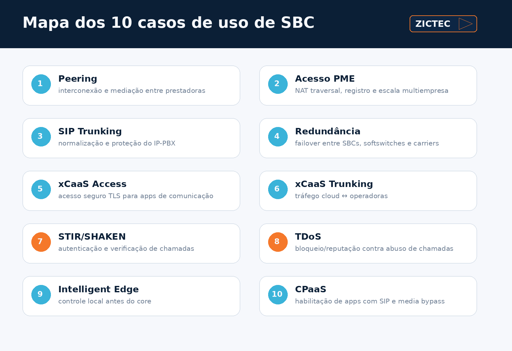
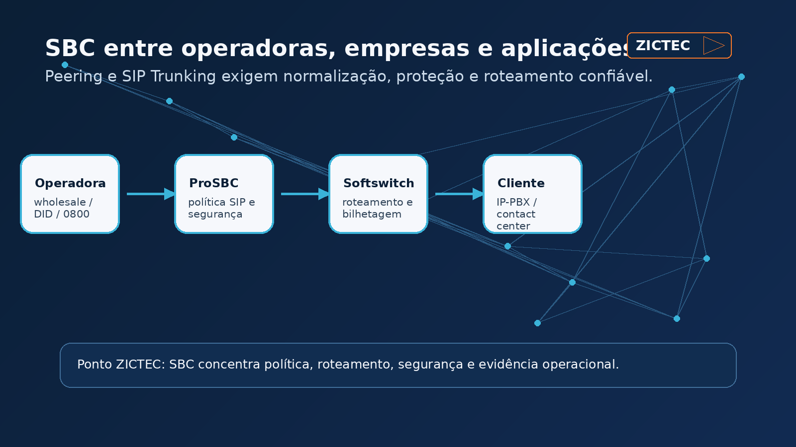
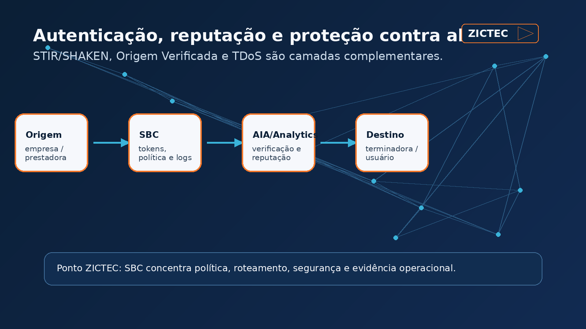
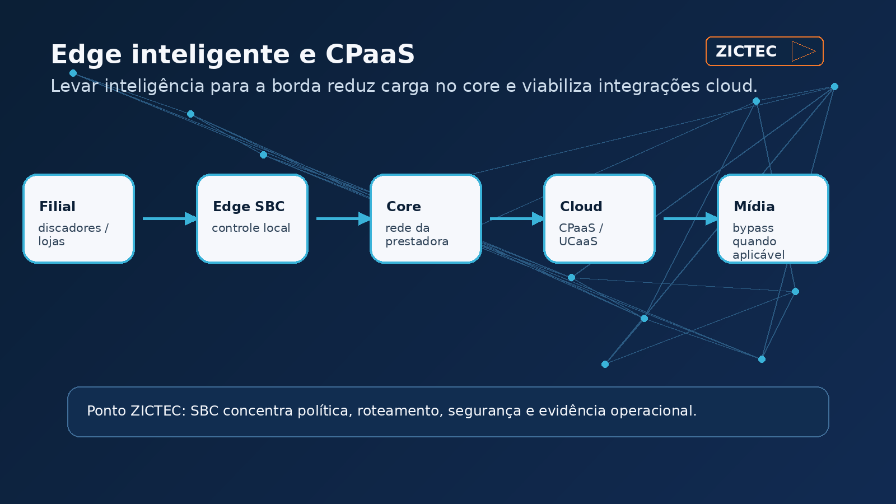

Este artigo foi adaptado e ampliado a partir do material técnico “Top Use Cases For Session Border Controllers”, da TelcoBridges/ProSBC, com contextualização editorial da ZICTEC para operadoras, provedores, contact centers e empresas que operam redes SIP/VoIP.
Resumo executivo
Em muitas redes, o Session Border Controller ainda é lembrado apenas como “firewall de SIP”. Na prática, um SBC carrier grade ocupa uma posição muito mais estratégica: ele normaliza interconexões, protege aplicações, controla roteamento, viabiliza redundância, registra evidências de tráfego, integra serviços de reputação e ajuda a preparar a rede para autenticação de chamadas.
Para quem opera voz em escala — prestadora, integrador, contact center, plataforma UCaaS/CPaaS ou empresa com múltiplos troncos SIP — o SBC vira uma camada de controle operacional da chamada.

1. Peering entre prestadoras: interconexão com mediação e controle
No peering, o SBC fica entre redes de prestadoras, fornecedores wholesale, operadoras regionais, plataformas UCaaS ou outros ambientes de voz. A função não é apenas “passar chamada”: é controlar como o tráfego entra e sai, normalizar comportamento SIP, aplicar políticas e produzir registros que sustentem operação, conciliação e troubleshooting.
Para a ZICTEC, esse caso é especialmente relevante em ambientes com múltiplas interconexões, legados TDM/SS7/SIP-I, rotas nacionais e internacionais, e necessidade de isolar problemas entre rede própria, parceiro e cliente final.
2. Acesso de PMEs e filiais: NAT traversal, registro e escala
Quando uma prestadora entrega telefonia para muitas empresas pequenas, filiais, lojas ou usuários remotos, o problema clássico aparece: telefones atrás de NAT, firewalls diferentes, registros SIP instáveis e centenas ou milhares de endpoints exigindo gestão centralizada.
O SBC ajuda a manter a borda organizada: recebe registros, atravessa NAT, protege o registrar/softswitch e permite operar vários clientes sem expor diretamente a aplicação central.
3. SIP Trunking corporativo: normalizar múltiplas operadoras
Empresas maiores raramente dependem de um único tronco. É comum haver DIDs, 0800, rotas internacionais, contingência e contratos com diferentes operadoras. Cada uma pode trazer particularidades de cabeçalhos SIP, codecs, regras de discagem, tratamento de caller ID e sinalização.
O SBC é a camada onde essas diferenças são normalizadas antes de chegar ao IP-PBX, contact center ou plataforma interna. Além disso, reduz a exposição da aplicação a tráfego malformado e permite políticas de saída por custo, qualidade, disponibilidade ou destino.

4. Redundância: continuidade quando uma peça falha
Redundância em voz não é só ter dois servidores. É preciso que softswitch, SBCs, operadoras e regras de roteamento concordem sobre o que acontece quando uma rota degrada, um provedor sai do ar, um MOS piora ou um equipamento falha.
Com dois SBCs ativos e regras bem definidas, a rede pode redirecionar tráfego automaticamente, reduzindo impacto para o assinante. Esse desenho exige arquitetura, testes e observabilidade — principalmente para evitar cenários em que a contingência existe no papel, mas não assume corretamente na prática.
5. Acesso xCaaS: proteger UCaaS, CPaaS e contact centers
Plataformas de comunicação como serviço precisam receber tráfego de dispositivos remotos, softphones e integrações distribuídas. Em muitos casos, a aplicação principal não deve lidar diretamente com criptografia, NAT traversal e exposição SIP à internet.
O SBC assume a borda segura: termina SIP/TLS quando aplicável, protege a aplicação, organiza o tráfego remoto e permite que a plataforma cresça com menos acoplamento entre segurança de rede e lógica de produto.
6. Trunking xCaaS: conectar aplicações cloud a operadoras
No trunking para UCaaS/CPaaS, o desafio muda de lado: a aplicação em nuvem precisa falar com múltiplas operadoras, DIDs, 0800, rotas internacionais e fornecedores locais.
O SBC fica como camada de interoperabilidade entre o mundo cloud e o mundo de operadoras. Ele controla regras de roteamento, adaptação de sinalização, proteção da aplicação e métricas de qualidade.
7. STIR/SHAKEN e autenticação de chamadas
STIR/SHAKEN adiciona à chamada um elemento criptográfico que permite verificar a legitimidade da origem. Em mercados como EUA e Canadá, essa camada já é usada para combater spoofing e robocalls. No Brasil, a discussão se conecta ao movimento regulatório da Anatel para autenticação e identificação de chamadas e à iniciativa comercial de Origem Verificada.
Aqui é importante separar conceitos:
- STIR/SHAKEN é a camada técnica/protocolo de autenticação e verificação;
- autenticação da chamada comprova, dentro do fluxo entre prestadoras, que a origem foi atestada conforme as regras aplicáveis;
- identificação de marca/campanha, como Origem Verificada/Branded Call, é uma camada posterior de exibição e relacionamento com o usuário final.
Um SBC pode participar do fluxo de autenticação/verificação, integrar serviços externos e preservar logs/evidências. Mas a exibição de marca ou logo no terminal depende de regras, homologações, cadastro, rotas e aceite do ecossistema — não deve ser prometida como consequência automática de “ter STIR/SHAKEN”.
8. Proteção contra TDoS e chamadas abusivas
TDoS — Telephony Denial of Service — ocorre quando uma empresa ou prestadora é inundada por chamadas, muitas vezes automatizadas, malformadas ou fraudulentas. O impacto pode ser operacional e financeiro: filas ocupadas, agentes indisponíveis, queda de qualidade e reclamações.
O SBC pode se integrar a serviços de analytics e reputação, enviando informações da chamada para classificação antes de permitir, bloquear, desviar ou colocar em triagem. Essa arquitetura é especialmente útil para contact centers, serviços críticos e prestadoras que precisam reduzir tráfego abusivo antes que ele chegue ao cliente.

9. Borda inteligente: filtrar antes de chegar ao core
Nem toda inteligência precisa ficar no core. Em clientes com alto volume de discagem, filiais críticas ou equipamentos locais com tráfego intenso, colocar função de SBC na borda pode reduzir carga no core e tratar problemas antes que contaminem a rede central.
Esse desenho pode ser útil para varejo, cobrança, operações distribuídas e cenários em que uma única filial ou aplicação gera volume desproporcional de chamadas.
10. Habilitação de CPaaS: SIP para aplicações e media bypass
Aplicações CPaaS precisam conversar com operadoras reais. Isso exige troncos SIP, normalização, segurança, roteamento e, muitas vezes, desenho para evitar custo excessivo de mídia em nuvem.
Em alguns cenários, o SBC controla a sinalização enquanto a mídia segue por caminho mais direto, reduzindo custo de tráfego em cloud. Esse tipo de arquitetura exige cuidado: segurança, NAT, codecs, gravação, compliance e troubleshooting precisam continuar observáveis.

Quando avaliar um SBC/ProSBC na sua operação
Considere uma revisão de arquitetura quando a rede apresenta um ou mais sinais abaixo:
- múltiplas operadoras ou rotas SIP com comportamento diferente;
- IP-PBX, softswitch ou contact center exposto demais à internet ou a parceiros;
- falhas de NAT, registro SIP ou áudio unidirecional em clientes remotos;
- necessidade de contingência real entre SBCs, softswitches e carriers;
- crescimento de tráfego abusivo, robocalls ou chamadas malformadas;
- preparação para autenticação de chamadas, STIR/SHAKEN ou Origem Verificada;
- desejo de conectar aplicações cloud/CPaaS a operadoras com controle de custo e mídia;
- dificuldade de provar causa raiz por falta de logs e evidências de borda.
Como a ZICTEC pode apoiar
A ZICTEC atua em projetos de voz IP, SIP, ProSBC, interconexão, suporte operacional e preparação para autenticação/identificação de chamadas. O trabalho pode começar por um diagnóstico técnico-comercial da arquitetura atual: rotas, SBCs, softswitches, pontos de falha, logs, regras de roteamento, exposição SIP, redundância e roadmap para novos serviços.
quer revisar se sua operação de voz está usando o SBC só como “borda” ou como camada real de controle? Fale com um especialista ZICTEC.
- Site: https://www.zictec.com.br
- WhatsApp: https://wa.me/554732300435
- Reunião: https://www.calendly.com/zictec/reuniao